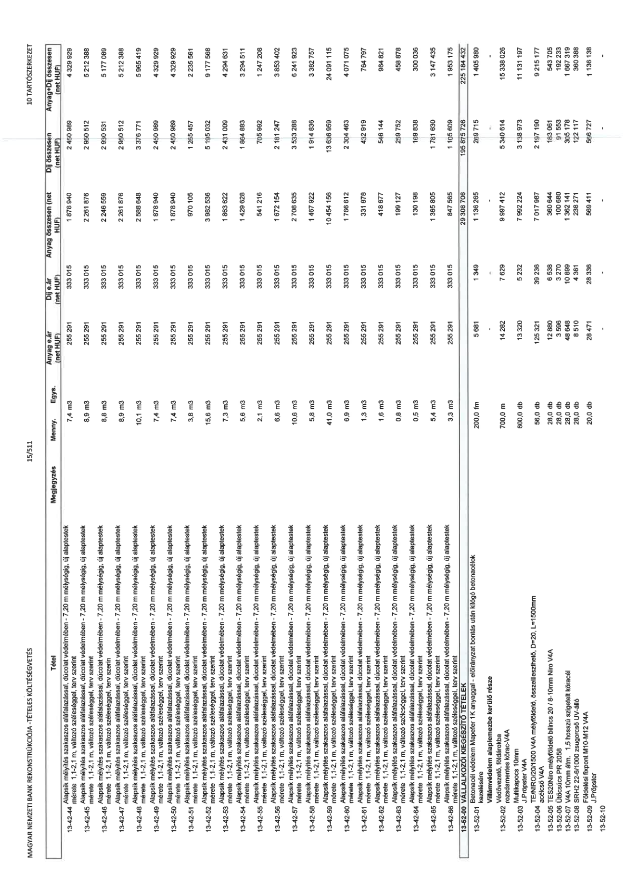

| Tétel | Megjegyzés | Menny. | Egys. | Anyag e.ár (net HUF) | Díj e.ár (net HUF) | Anyag összesen (net HUF) | Díj összesen (net HUF) | Anyag+Díj összesen (net HUF) |
|---|---|---|---|---|---|---|---|---|
| 13-42-44 Alapsík mélyítés szakaszos aláfalazással, dúcolat védelmében - 7,20 m mélységig, új alaptestek mérete: 1,1-2,1 m, változó szélességgel, terv szerint | NaN | 7,4 | m3 | 255 291 | 333 015 | 1 878 940 | 2 450 989 | 4 329 929 |
| 13-42-45 Alapsík mélyítés szakaszos aláfalazással, dúcolat védelmében - 7,20 m mélységig, új alaptestek mérete: 1,1-2,1 m, változó szélességgel, terv szerint | NaN | 8,9 | m3 | 255 291 | 333 015 | 2 281 876 | 2 950 512 | 5 232 388 |
| 13-42-46 Alapsík mélyítés szakaszos aláfalazással, dúcolat védelmében - 7,20 m mélységig, új alaptestek mérete: 1,1-2,1 m, változó szélességgel, terv szerint | NaN | 8,8 | m3 | 255 291 | 333 015 | 2 246 559 | 2 930 531 | 5 177 089 |
| 13-42-47 Alapsík mélyítés szakaszos aláfalazással, dúcolat védelmében - 7,20 m mélységig, új alaptestek mérete: 1,1-2,1 m, változó szélességgel, terv szerint | NaN | 8,9 | m3 | 255 291 | 333 015 | 2 281 876 | 2 950 512 | 5 232 388 |
| 13-42-48 Alapsík mélyítés szakaszos aláfalazással, dúcolat védelmében - 7,20 m mélységig, új alaptestek mérete: 1,1-2,1 m, változó szélességgel, terv szerint | NaN | 10,1 | m3 | 255 291 | 333 015 | 2 588 848 | 3 376 771 | 5 965 619 |
| 13-42-49 Alapsík mélyítés szakaszos aláfalazással, dúcolat védelmében - 7,20 m mélységig, új alaptestek mérete: 1,1-2,1 m, változó szélességgel, terv szerint | NaN | 7,4 | m3 | 255 291 | 333 015 | 1 878 940 | 2 450 989 | 4 329 929 |
| 13-42-50 Alapsík mélyítés szakaszos aláfalazással, dúcolat védelmében - 7,20 m mélységig, új alaptestek mérete: 1,1-2,1 m, változó szélességgel, terv szerint | NaN | 7,4 | m3 | 255 291 | 333 015 | 1 878 940 | 2 450 989 | 4 329 929 |
| 13-42-51 Alapsík mélyítés szakaszos aláfalazással, dúcolat védelmében - 7,20 m mélységig, új alaptestek mérete: 1,1-2,1 m, változó szélességgel, terv szerint | NaN | 3,8 | m3 | 255 291 | 333 015 | 970 105 | 1 265 457 | 2 235 561 |
| 13-42-52 Alapsík mélyítés szakaszos aláfalazással, dúcolat védelmében - 7,20 m mélységig, új alaptestek mérete: 1,1-2,1 m, változó szélességgel, terv szerint | NaN | 15,6 | m3 | 255 291 | 333 015 | 3 982 536 | 5 195 032 | 9 177 568 |
| 13-42-53 Alapsík mélyítés szakaszos aláfalazással, dúcolat védelmében - 7,20 m mélységig, új alaptestek mérete: 1,1-2,1 m, változó szélességgel, terv szerint | NaN | 7,3 | m3 | 255 291 | 333 015 | 1 863 622 | 2 431 009 | 4 294 631 |
| 13-42-54 Alapsík mélyítés szakaszos aláfalazással, dúcolat védelmében - 7,20 m mélységig, új alaptestek mérete: 1,1-2,1 m, változó szélességgel, terv szerint | NaN | 5,6 | m3 | 255 291 | 333 015 | 1 429 628 | 1 864 883 | 3 294 511 |
| 13-42-55 Alapsík mélyítés szakaszos aláfalazással, dúcolat védelmében - 7,20 m mélységig, új alaptestek mérete: 1,1-2,1 m, változó szélességgel, terv szerint | NaN | 2,1 | m3 | 255 291 | 333 015 | 541 216 | 705 992 | 1 247 208 |
| 13-42-56 Alapsík mélyítés szakaszos aláfalazással, dúcolat védelmében - 7,20 m mélységig, új alaptestek mérete: 1,1-2,1 m, változó szélességgel, terv szerint | NaN | 6,6 | m3 | 255 291 | 333 015 | 1 672 154 | 2 181 247 | 3 853 402 |
| 13-42-57 Alapsík mélyítés szakaszos aláfalazással, dúcolat védelmében - 7,20 m mélységig, új alaptestek mérete: 1,1-2,1 m, változó szélességgel, terv szerint | NaN | 10,6 | m3 | 255 291 | 333 015 | 2 706 085 | 3 530 288 | 6 236 373 |
| 13-42-58 Alapsík mélyítés szakaszos aláfalazással, dúcolat védelmében - 7,20 m mélységig, új alaptestek mérete: 1,1-2,1 m, változó szélességgel, terv szerint | NaN | 5,8 | m3 | 255 291 | 333 015 | 1 467 922 | 1 914 636 | 3 382 558 |
| 13-42-59 Alapsík mélyítés szakaszos aláfalazással, dúcolat védelmében - 7,20 m mélységig, új alaptestek mérete: 1,1-2,1 m, változó szélességgel, terv szerint | NaN | 41,0 | m3 | 255 291 | 333 015 | 10 464 156 | 13 636 659 | 24 100 815 |
| 13-42-60 Alapsík mélyítés szakaszos aláfalazással, dúcolat védelmében - 7,20 m mélységig, új alaptestek mérete: 1,1-2,1 m, változó szélességgel, terv szerint | NaN | 6,9 | m3 | 255 291 | 333 015 | 1 766 612 | 2 304 463 | 4 071 075 |
| 13-42-61 Alapsík mélyítés szakaszos aláfalazással, dúcolat védelmében - 7,20 m mélységig, új alaptestek mérete: 1,1-2,1 m, változó szélességgel, terv szerint | NaN | 1,3 | m3 | 255 291 | 333 015 | 331 878 | 432 919 | 764 797 |
| 13-42-62 Alapsík mélyítés szakaszos aláfalazással, dúcolat védelmében - 7,20 m mélységig, új alaptestek mérete: 1,1-2,1 m, változó szélességgel, terv szerint | NaN | 1,6 | m3 | 255 291 | 333 015 | 418 677 | 546 144 | 964 821 |
| 13-42-63 Alapsík mélyítés szakaszos aláfalazással, dúcolat védelmében - 7,20 m mélységig, új alaptestek mérete: 1,1-2,1 m, változó szélességgel, terv szerint | NaN | 0,8 | m3 | 255 291 | 333 015 | 199 127 | 259 752 | 458 878 |
| 13-42-64 Alapsík mélyítés szakaszos aláfalazással, dúcolat védelmében - 7,20 m mélységig, új alaptestek mérete: 1,1-2,1 m, változó szélességgel, terv szerint | NaN | 0,5 | m3 | 255 291 | 333 015 | 130 198 | 169 838 | 300 036 |
| 13-42-65 Alapsík mélyítés szakaszos aláfalazással, dúcolat védelmében - 7,20 m mélységig, új alaptestek mérete: 1,1-2,1 m, változó szélességgel, terv szerint | NaN | 5,4 | m3 | 255 291 | 333 015 | 1 365 805 | 1 781 630 | 3 147 435 |
| 13-42-66 Alapsík mélyítés szakaszos aláfalazással, dúcolat védelmében - 7,20 m mélységig, új alaptestek mérete: 1,1-2,1 m, változó szélességgel, terv szerint | NaN | 3,3 | m3 | 255 291 | 333 015 | 847 565 | 1 105 609 | 1 953 175 |
| 13-52-00 VÁLLALKOZÓI KIEGÉSZÍTŐ TÉTELEK | NaN | NaN | NaN | 0 | 0 | 29 308 706 | 195 875 726 | 225 184 432 |
| 13-52-01 Belső udvar alaplemez MAPEI IK anyagal - alépítményi bontás után kilógó betonacélok kezelésére | NaN | 200,0 | fm | 5 681 | 1 349 | 1 136 285 | 269 715 | 1 405 980 |
| 13-52-02 | Villámvédelem alaplemezbe kerülő része\nVédővezető, földárokba rozsdamentes korac-V4A | 700,0 | m | 14 282 | 7 629 | 9 997 412 | 5 340 614 | 15 338 026 |
| 13-52-03 Földelőszonda (J.Pröpster V4A TE/NIRO/20/1500 V4A mélyföldelő, összeilleszthető, D=20, L=1500mm acélcső V4A) | NaN | 600,0 | db | 13 320 | 5 232 | 7 992 224 | 3 138 973 | 11 131 197 |
| 13-52-04 TE/NIRO/20/1500 V4A mélyföldelő, összeilleszthető, D=20, L=1500mm acélcső V4A | NaN | 56,0 | db | 125 321 | 39 236 | 7 017 987 | 2 197 190 | 9 215 177 |
| 13-52-05 L225/V4A mélyföldelő bilincs 20 / 8-10mm Niro V4A | NaN | 28,0 | db | 12 880 | 6 538 | 360 644 | 183 061 | 543 705 |
| 13-52-06 Ütőcsúcs PR 2058 | NaN | 28,0 | db | 3 596 | 3 270 | 100 680 | 91 563 | 192 243 |
| 13-52-07 V4A 10mm átm. 1,5 hosszú szigetelt köracél | NaN | 28,0 | db | 48 648 | 10 899 | 1 362 141 | 305 178 | 1 667 319 |
| 13-52-08 SRH2 22-8/1000 zsugorcső UV-álló | NaN | 28,0 | db | 8 510 | 4 361 | 238 271 | 122 117 | 360 388 |
| 13-52-09 Földelő főpont M10-M12 V4A J.Pröpster | NaN | 20,0 | db | 28 471 | 28 336 | 569 411 | 566 727 | 1 136 138 |
